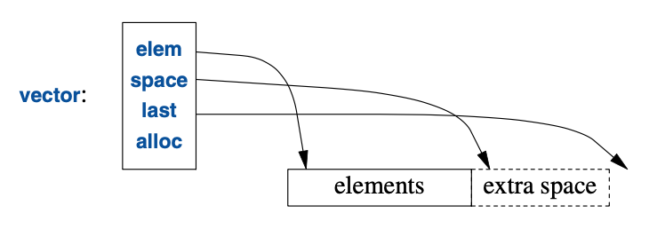
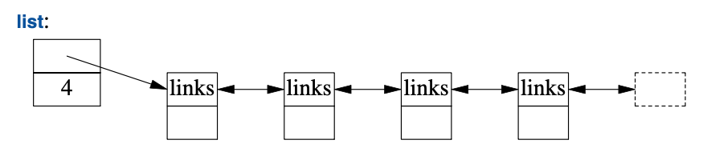
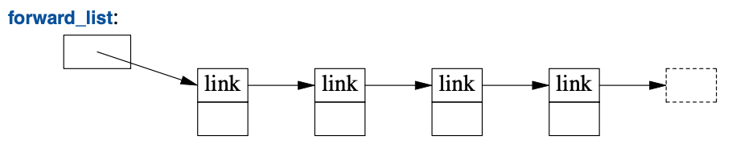
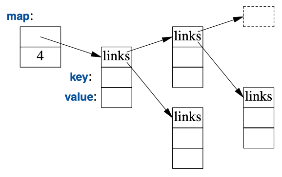
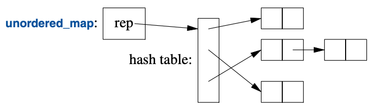

11
容器
它新颖。
它卓越。
它简洁。
它必将成功！
—— 霍雷肖·纳尔逊1
11.1 导言
大多数计算都要涉及创建值的集合，并且还要操作这些集合。
把一些字符读进一个string再打印出这个string就是简单的例子。
如果某个类的主要用途是装载一些对象，它通常被称为容器（container）。
在构建程序过程中，有个至关重要的任务：
为给定任务提供合适的容器，并使用便利的基础操作为它们提供支持。
为阐明标准库容器，请考虑一个程序用于保存名字和电话号码。
对于不同背景的人，这个程序会以不同的方法归类到“简单且明了”的分类中。
§10.5 中的 Entry类可用于保存一个简单的电话簿条目。
此处，我们有意忽略了现实世界的许多复杂性，
例如“很多电话号码无法以32位int表示”的这个情况。
11.2 vector
最有用的标准库容器是vector。vector是给定类型元素的一个序列。
这些元素在内存中连续存储。
vector典型的实现（§4.2.2，§5.2）会包含一些指针，指向首元素、
最后一个元素后的位置、已分配空间后的位置（§12.1）（或以指针加偏移表示的等价信息）：

此外，它还会包含一个内存分配器（此处的alloc），
vector可以用它为元素申请内存。
默认的内存分配器使用new和delete对内存进行申请和释放（§13.6）。
可以用一组元素类型的值对vector进行初始化：
vector<Entry> phone_book = {
{"David Hume",123456},
{"Karl Popper",234567},
{"Bertrand Arthur William Russell",345678}
};
元素可以通过下标进行访问。假设已经为Entry定义了<<，可以写：
void print_book(const vector<Entry>& book)
{
for (int i = 0; i!=book.size(); ++i)
cout << book[i] << '\n';
}
按惯例，下标自0开始，因此book[0]保存着David Hume的条目。
vector的成员函数size()给出元素的数量。
vector的元素构成一个区间，因此可以应用区间-for循环（§1.7）：
void print_book(const vector<Entry>& book)
{
for (const auto& x : book) // 关于 "auto"， 见 §1.4
cout << x << '\n';
}
定义一个vector的时候，会给它一个初始容量（元素的初始数量）：
vector<int> v1 = {1, 2, 3, 4}; // 容量为 4
vector<string> v2; // 容量为 0
vector<Shape*> v3(23); // 容量为 23；初始元素值：nullptr
vector<double> v4(32,9.9); // 容量为 32；初始元素值：9.9
显式的容量由一对普通的小括号包围，例如(23)，默认情况下，
这些元素被初始化为元素类型的默认值（即：指针为nullptr，而数值为0）。
如果你不想使用默认值，可以通过第二个参数指定一个值
（即：9.9之于v4的32个元素那样）。
初始容量可变的。
vector最有用的一个操作是push_back()，
它在vector末尾添加一个新元素，并将其容量加一。
例如，假设我们为Entry定义了>>，就可以这样写：
void input()
{
for (Entry e; cin>>e; )
phone_book.push_back(e);
}
这段代码从标准输入读取Entry放到phone_book中，
遇到输入结束（end-of-input）（即 到达文件末尾）或读取操作遭遇格式错误都会停止。
标准库中vector的具体实现确保了反复通过push_back()增长这个操作的效率。
为演示其方法，请考虑这个精致的简化版Vector（第4章和第6章），其结构如上图所示：
template<typename T>
class Vector {
T* elem; // 指向首个元素的指针
T* space; // 指向首个未使用（且未初始化）的空位的指针
T* last; // 指向最后一个空位的指针
public:
// ...
int size(); // 元素数量 (space-elem)
int capacity(); // 可容纳元素的数量 (last-elem)
// ...
void reserve(int newsz); // 增加 capacity() 到 newsz
// ...
void push_back(const T& t); // 把 t 复制进 Vector
void push_back(T&& t); // 把 t 移动进 Vector
};
标准库的vector具有成员capacity()、reverse()和push_back()。
reserve()供vector的用户和其它成员函数使用，用途是为将来的元素预留空间。
它可能不得不分配新的内存，此时，它会将当前的元素移至新分配的内存里。
有了capacity()和reverse()，实现push_back()就轻而易举了：
template<typename T>
void Vector<T>::push_back(const T& t)
{
if (capacity()<size()+1) // 确保有空间保存 t
reserve(size()==0?8:2*size()); // 把容量翻倍
new(space) T{t}; // 将 *space 初始化为 t
++space;
}
如此一来，分配内存和移动元素位置就不至于很频繁。
我曾经试图利用reserve()提高性能，但结果是白费力气：
总的来说，vector的方法优于我的臆测，因此，我目前只会在用指针指向其元素时，
才显式调用reserve()，以避免元素移动位置（而导致指针空悬——译者）。
vector可以在赋值和初始化的时候被复制。例如：
vector<Entry> book2 = phone_book;
vector的复制和移动经由构造函数和赋值运算符实现，详情请见 §5.2。
赋值vector涉及复制其元素。
因此，在book2初始化后，book2和phone_book为每个Entry分别保存副本。
当一个vector存有大量元素，这种看似人畜无害的赋值和初始化就会代价高昂。
在不该执行复制操作的地方，应该使用引用或指针（§1.7），或者移动操作（§5.2.2）。
标准库的vector非常灵活而高效。请把它作为你默认的容器；
就是说，除非你有足够的理由使用其它容器，否则就应该用它。
如果你出于“效率”考量方面的担忧而打算弃用vector，请测试一下效率。
在容器使用的性能方面，我们的直觉往往漏洞百出。
11.2.1 元素
与所有标准库容器相似，vector是个某种类型T元素的容器，
简言之是个vector<T>。
任何类型都可以成为元素类型：内建的数值类型（例如char、int和double），
用户定义类型（例如string、Entry、list<T>及Matrix<double,2>），
以及指针（例如const char*、Shape*和double*）。
当你插入一个新元素，它的值会被复制进入容器。
例如，当你把一个值为7的整数放进元素，所产生元素的值为7。
该元素不是指向某个装载着7的对象的引用或指针。
这样做可令容器优雅、紧凑且访问迅速。
对于在意内存消耗以及运行时性能的用户，这至关重要。
如果你有一个类体系（§4.5），该体系依赖于virtual函数以实现多态行为，
别直接在容器里保存对象。用指针（或者智能指针；§13.2.1）取代它。例如：
vector<Shape> vs; // 别这么做——没有空间容纳 Circle 或 Smiley
vector<Shape*> vps; // 好一些，参看 §4.5.3
vector<unique_ptr<Shape>> vups; // OK
11.2.2 越界检查
标准库vector不保证进行越界检查。例如：
void silly(vector<Entry>& book)
{
int i = book[book.size()].number; // book.size() 越界了
// ...
}
那条初始化语句很可能给i一个不确定的值，而不是报错。
这可不合时宜，而且越界访问（out-of-range）是个常见的问题。
因此，我通常使用一个带有越界检查的vector修改版：
template<typename T>
class Vec : public std::vector<T> {
public:
using vector<T>::vector; // （以名称Vec）使用vector的构造函数
T& operator[](int i) // 越界检查
{ return vector<T>::at(i); }
const T& operator[](int i) const // const 对象的越界检查； §4.2.1
{ return vector<T>::at(i); }
};
除了为越界检查重定义过的取下标操作以外，Vec从vector继承了所有内容。
at()是个vector的取下标操作，如果其参数越界了，
它将抛出out_of_range类型的异常（§3.5.1）。
对于Vec来说，越界访问将抛出异常供用户捕获。例如：
void checked(Vec<Entry>& book)
{
try {
book[book.size()] = {"Joe",999999}; // 将会抛出异常
// ...
}
catch (out_of_range&) {
cerr << "range error\n";
}
}
这将会抛出异常，然后被捕获（§3.5.1）。
如果用户不捕获某个异常，程序会以良好定义的方式终止，
而不是继续运行或导致未定义的行为。
有个方法会尽可能避免未捕获异常导致的慌乱，
就是用try-块作为main()的函数体。
例如：
int main()
try {
// 你的代码
}
catch (out_of_range&) {
cerr << "range error\n";
}
catch (...) {
cerr << "unknown exception thrown\n";
}
这提供了缺省的的异常处理，对于漏掉的异常，
会有一条错误信息输出到标准错误诊断流cerr（§10.2）。
为什么标准不确保越界检查呢？
许多追求性能的应用程序使用vector，而对所有的取下标操作意味着10%的性能损失。
显而易见，该性能损失对于不同的硬件、优化器和执行的取下标操作而有所不同。
然而，经验显示此代价会导致人们转而采用安全性奇差的内建数组。
尽管对此代价的些许担忧会导致弃用。
vector在debug时仍易于进行越界检查，
而且还可以在未检查的默认版本上构建提供检查的版本。
某些编译器提供了带有越界检查的vector版本（即：使用编译器选项），
以解除你定义Vec（或等价物）的烦恼。
区间-for借助迭代器在[bdgin():end())区间访问元素以避免越界错误。
只要其迭代器参数有效，标准库中的算法以同样的机制确保越界错误不会发生。
如果你可以在代码中直接使用vector::at()，就无需使用我那个Vec变通方案。
另外，某些标准库具备带有越界检查的vector实现，提供了比Vec更完善的检查。
11.3 list
标准库提供了一个名为list的双向链表：

对于某些序列，需要在插入和删除元素时避免移动其它元素，此时我们为其应用list。
对于电话薄，插入和删除是常规操作，因此用list表示电话薄就很适宜。例如：
list<Entry> phone_book = {
{"David Hume",123456},
{"Karl Popper",234567},
{"Bertrand Arthur William Russell",345678}
};
在使用链表时，通常不会像使用vector那样以取下标的方式访问元素。
相反，会为了找到某个给定值而对链表进行查找操作。
为此，我们要借助第12章提及的“list是个序列”这一优势：
int get_number(const string& s)
{
for (const auto& x : phone_book)
if (x.name==s)
return x.number;
return 0; // 用 0 表示“号码未发现”
}
对s的查找自链表的头部开始一路向后执行，直至找到s或者抵达phone_book的尾部。
有时候，我们需要确定list中的某个元素。
例如，可能需要删除某个元素或在其前面插入一个元素。
此操作需要使用迭代器（iterator）：list的迭代器确定list中的某个元素，
还可以用于遍历（iterate）该list（并由此得名）。
所有的标准库容器都提供begin()和end()函数，
它们分别返回指向首元素和尾元素之后一个位置
（one-beyond-the-end）的迭代器（第12章）。
使用迭代器可以——略失优雅地——这样写get_number()：
int get_number(const string& s)
{
for (auto p = phone_book.begin(); p!=phone_book.end(); ++p)
if (p->name==s)
return p->number;
return 0; // 用 0 表示“号码未发现”
}
实际上，编译器大致就是这样实现了更简洁且更不易出错的区间-for。
给定一个迭代器p，*p就是它指向的元素，++p自增p，使之指向下一个元素，
当p指向一个具有成员m的类，p->m等价于(*p).m。
向list添加和从中删除元素都很简单：
void f(const Entry& ee, list<Entry>::iterator p, list<Entry>::iterator q) {
phone_book.insert(p,ee); // 在 p 指向的元素前插入 ee
phone_book.erase(q); // 移除 q 指向的元素
}
对于list，insert(p,elem)在p指向的元素前插入elem的一个副本作为元素。
此处，p可能是一个指向list尾元素后一个位置的迭代器。
反之，erase(p)移除p指向的元素并销毁它。
这些list的例子都可以使用vector并以相同的方式去写，
并且（惊人的是，除非你理解机器架构）在一个小vector上的性能优于小list。
如果我们只需要一个元素的序列，那就用vector。
vector在遍历（即find()和count()）及排序和查找（即sort()、
equal_range()；§12.6，§13.4.3）方面的性能更好。
标准库还提供了一个名为forward_list的单链表：

forward_list跟list的区别是它仅允许前向遍历。其目的是节约存储空间。
它无需在每个节点上都保存前一个元素的指针，
并且空forward_list只占用一个指针的空间。
forward_list甚至不保存其元素数量，如果你需要知道元素数量，就得数一遍。
如果你无法承担计数元素数量的开销，可能就不该用forward_list。
11.4 map
通过写代码，在一个(name,number)对的列表里面查找某个name相当烦冗。
另外，线性查找对于短列表以外的情况都效率低下。
标准库还提供一个名为map的平衡二叉树（通常是红黑树）：

在其它语境中，map也被称为关联数组或字典。它以平衡二叉树的方式实现。
标准库map是一个承载 值对 的容器，针对查找进行了优化。
可以跟list和vector以相同的方式进行初始化（§11.2，§11.3）：
map<string,int> phone_book {
{"David Hume",123456},
{"Karl Popper",234567},
{"Bertrand Arthur William Russell",345678}
};
当使用其中第一个类型（被称为键（key））的值去索引时，map返回对应的第二个类型
（被称为 值（value） 或 映射类型（mapped type））的值。例如：
int get_number(const string& s)
{
return phone_book[s];
}
换句话说，对map取下标基本上就是我们称之为get_number()的查找操作。
如果没找到key，那么它就跟value的默认值一起被插入map。
整数的默认值是0；恰恰是我选取的用于表示无效电话号码的值。
如果要避免将无效号码插入电话薄，可以用find()和insert()替代[]。
11.5 unordered_map
map的查找开销是O(log(n))，其中n是map的元素数量。这已经相当好了。
比方说对于具有 1,000,000 个元素的map，
只需要大约20次比对和转向即可找到某个元素。
不过，在很多情况下，使用哈希（hash）查找而非<这样的排序比对函数，还能更进一步。
标准库的哈希容器被称为“无序（unordered）”，是因为他们不需要一个排序比对函数：

例如，可以用<unordered_map>中的unordered_map实现电话薄：
unordered_map<string,int> phone_book {
{"David Hume",123456},
{"Karl Popper",234567},
{"Bertrand Arthur William Russell",345678}
};
就像使用map那样，可以对unordered_map取下标：
int get_number(const string& s)
{
return phone_book[s];
}
标准库为string和其它内建及标准库类型提供了缺省的哈希函数。
如果有必要，你可以提供你自己的版本（§5.4.6）。
对于“定制的”哈希函数，最常见的需求可能就来自于我们要为自己的类型创建无序容器。 哈希函数通常以函数对象（§6.3.2）的形式提供。例如：
struct Record {
string name;
int product_code;
// ...
};
struct Rhash { // 针对 Record 的哈希函数
size_t operator()(const Record& r) const
{
return hash<string>()(r.name) ˆ hash<int>()(r.product_code);
}
};
unordered_set<Record,Rhash> my_set; // Record类型的set，使用Rhash进行查找
良好哈希函数的设计是一门艺术，有时候需要对使用它的数据有一定的了解。
把现有的哈希函数用异或（^）进行组合从而创建一个新哈希函数很简单，通常也很高效。
如果定义成标准库hash的一个特化，就不必显式传递hash操作了：
namespace std { // 给 Record 弄个哈希函数
template<> struct hash<Record> {
using argument_type = Record;
using result_type = std::size_t;
size_t operator()(const Record& r) const
{
return hash<string>()(r.name) ˆ hash<int>()(r.product_code);
}
};
}
请注意map和unordered_map之间的差异：
map需要一个排序比对函数（默认情况下是<）并产生一个有序的序列unordered_map需要一个相等性判定函数（默认情况下是==）； 它不会维护元素间的顺序。
给定一个好的哈希函数，对于大容量的容器，unordered_map会比map快很多。
不过，对于糟糕的哈希函数，unordered_map的最差情况又比map差很多。
11.6 容器概览
标准库提供了某些最常规且有用的容器类型，以便程序员从中挑选最适合的去构建应用：
|
标准容器概要 |
|
|---|---|
vector<T> |
长度可变的数组（§11.2） |
list<T> |
双向链表（§11.3） |
forward_list<T> |
单链表 |
deque<T> |
双向队列 |
set<T> |
集合（有key无value的map） |
multiset<T> |
同一个值可以存在多份的集合 |
map<K,V> |
关联数组（§11.4） |
multimap<K,V> |
同一个key可以存在多份的map |
unordered_map<K,V> |
使用哈希查找的map（§11.5） |
unordered_multimap<K,V> |
使用哈希查找的multimap |
unordered_set<K,V> |
使用哈希查找的set |
unordered_multiset<K,V> |
使用哈希查找的multiset |
无序容器为通过key（通常是字符串）查找而优化；换句话说它们是用哈希表实现的。
这些容器定义在命名空间std中，
并放置在vector、list、map等头文件（§8.3）里。
另外，标准库还提供容器适配器queue<T>、stack<T>、priority_queue<T>。
如果你需要，请查找它们。
标准库还提供更多特化的类容器（container-like）类型，
例如array<T,N>（§13.4.1）和bitset<N>（§13.4.2）。
从书写形式的角度看，标准容器及其基本操作被设计得相互形似。 而且，对于不同容器而言操作的语意是等价的。 可应用于每种容器的，有意义且实现高效的基本操作包括：
|
标准容器操作（部分） |
|
|---|---|
value_type |
元素的类型 |
p=c.begin() |
p指向c的首个元素；
还有返回const迭代器的cbegin()
|
p=c.end() |
p指向c的尾元素后的位置；
还有返回const迭代器的cend()
|
k=c.size() |
k是c中元素的数量
|
c.empty() |
c是否为空？ |
k=c.capacity() |
k是c无需申请新内存的情况下所能承载的元素数量
|
c.reserve(k) |
把capacity变成k |
c.resize(k) |
把元素数量改成k；新增元素的值为value_type{} |
c[k] |
c的第k个元素；不做越界检查 |
c.at(k) |
c的第k个元素；若越界则抛出out_of_range
|
c.push_back(x) |
把x添加到c末尾；并把c的size加一
|
c.emplace_back(a) |
把value_type{a}添加到c末尾；并把c的size加一
|
q=c.insert(p,x) |
在c中把x添加到p前
|
q=c.erase(p) |
从c中删除p
|
c=c2 |
赋值 |
b=(c==c2)，以及!= |
c和c2中的元素是否全相等；如果相等b==true
|
x=(c<c2)，
以及<=、>、>= |
c和c2的字典序：
若小于则x<0，
若相等则x==0，
若大于则0<x
|
这种符号跟语意的一致性使得程序员能够创造新的容器类型，并能在用法上与标准容器类似。
提供越界检查的vector，Vector（§3.5.2，第4章）就是这样的例子。
容器接口的一致性让我们能够定义独立于特定容器类型的算法。可惜，有一利就有一弊。
比方说，对vector取下标和遍历开销小且易操作。
但是vector在插入或移除元素的时候，要对元素进行移动；list的特性则刚好相反。
请注意，对于小元素构成的较短序列，vector通常比list高效
（就连insert()和erase()也是如此）。
我推荐标准库的vector作为元素序列的默认类型：
如果你选择其它容器，就需要找到足够的理由。
考虑一下单链表，forward_list，一种专为空序列而优化的容器（§11.3）。
一个空的forward_list仅占据一个机器字的空间，而空vector要占三个。
空序列或者仅存放一或两个元素的序列，出乎意料地常见且有用。
在容器内直接构造元素（emplace）的操作，比如emplace_back()，
为一个元素的构造函数接收参数，并在容器中新分配的空间上构造出这个对象，
而不是把对象复制进入容器。
比如，对于vector<pair<int,string>>可以这么写2：
v.push_back({1,"copy or move"}); // 构造一个 pair 并移进 v
v.emplace_back(1,"build in place"); // 在 v 里构造一个 pair
11.7 忠告
- [1] 一个 STL 容器定义一个序列；§11.2。
- [2] STL 容器是资源执柄；§11.2，§11.3，§11.4，§11.5。
- [3] 把
vector作为你的默认容器；§11.2，§11.6；[CG: SL.con.2]。 - [4] 为容器的简单遍历使用 区间-
for或者迭代器的 begin/end 对；§11.2，§11.3。 - [5] 使用
reserve()以避免指向元素的指针和迭代器失效；§11.2。 - [6] 未经测试的情况下，别对
reserve()的性能优势抱有期待；§11.2。 - [7] 在容器上
push_back()或resize()，而不是在数组上realloc()；§11.2。 - [8] 别用迭代器访问resize过的
vector；§11.2。 - [9] 别期待
[]会进行越界检查；§11.2。 - [10] 需要确保进行越界检查的情况下用
at()；§11.2，[CG: SL.con.3]。 - [11] 用 区间-
for和标准库算法可以零成本避免越界访问错误；§11.2.2。 - [12] 元素进入容器的方式是复制；§11.2.1。
- [13] 为保留元素的多态行为，请存储指针；§11.2.1。
- [14]
vector的插入操作，例如insert()和push_back()， 效率通常意外的好；§11.3。 - [15] 为通常置空的序列使用
forward_list；§11.6。 - [16] 涉及性能的时候，别主观臆断，先测试；§11.2。
- [17]
map通常是以红黑树的方式实现的；§11.4. - [18]
unordered_map是个哈希表；§11.5. - [19] 以引用的方式传递容器，作为返回值的时候以值的方式返回；§11.2。
- [20] 对于容器，用
()-初始化 语法指定size，{}-初始化 语法指定元素列表；§4.2.3，§11.2。 - [21] 优先使用紧凑连续的数据结构；§11.3。
- [22]
list的遍历操作相对高昂；§11.3。 - [23] 如果需要在大规模数据中迅速查找，使用 unordered 容器；§11.5。
- [24] 如果需要按顺序遍历元素，请使用有序的关联容器（即
map和set）；§11.4。 - [25] 为不需要常规顺序（即，不存在合理的
<） 的元素类型使用unordered 容器；§11.4。 - [26] 做试验以确保哈希函数是否可接受；§11.5。
- [27] 用异或操作（
^）将元素的标准哈希结果组合起来的哈希函数通常不错；§11.5。 - [28] 去了解标准库容器并优先使用它们， 而不要使用私下里手工打造的数据结构；§11.6。
1. 这句话的原文出自“The Letters of Lord Nelson to Lady Hamilton, Vol II.”书中的“LETTER LX.”，该书可在网址 https://www.gutenberg.org/ebooks/15437 查阅，未发现中文译本。 —— 译者注 ↩
2. 原书第一行代码是v.push_back(pair{1,"copy or move")); // make a pair and move it into v，无法通过编译，我改了一下。 —— 译者注 ↩